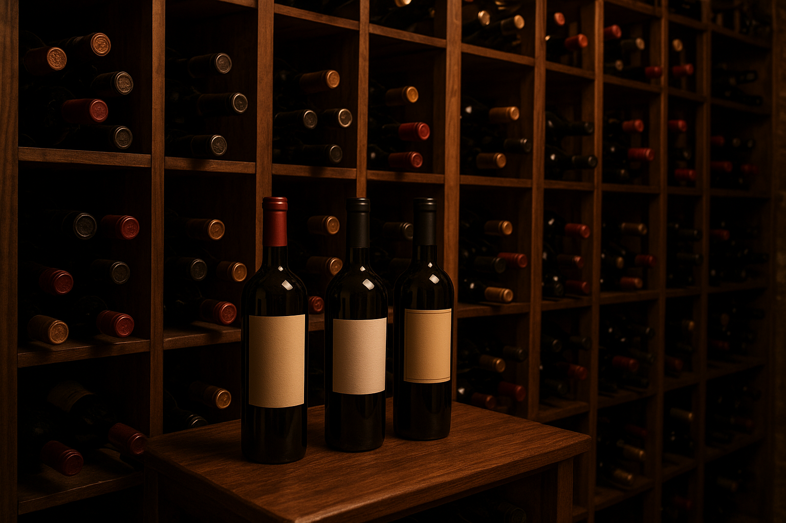

Entre colinas ensolaradas e vinhedos que atravessam gerações, nasce a essência dos nossos vinhos. Cada garrafa é fruto de dedicação, cuidado artesanal e da paixão em transformar uvas selecionadas em experiências inesquecíveis.
Aqui, o tempo não é pressa, é aliado. Ele amadurece os aromas, equilibra os sabores e guarda em cada detalhe a união entre natureza e cultura. Nossos vinhos carregam não apenas notas sensoriais, mas também memórias e histórias que atravessam o tempo, conectando passado, presente e futuro.
Na Vinheria Bella, cada rótulo é um convite a apreciar a vida com mais calma e intensidade. Do frescor de um branco leve ao corpo marcante de um tinto encorpado, até a celebração festiva de um espumante, nossa coleção foi pensada para acompanhar todos os momentos — desde os encontros simples do dia a dia até as ocasiões mais especiais.
Mais do que vinhos, oferecemos experiências. Ao escolher a nossa adega, você brinda não apenas com uma bebida de qualidade, mas com a tradição de uma família que cultiva a arte da viticultura e o prazer de compartilhar bons momentos à mesa.
Permita-se descobrir, degustar e celebrar com a gente. Na Vinheria Agnello, cada taça é um brinde à vida.

Harmonizações
Saber harmonizar vinhos com diferentes pratos é muito mais do que uma questão de sabor: é uma experiência sensorial completa. Quando o vinho certo encontra o alimento certo, ambos se elevam, criando uma combinação que desperta aromas, intensifica sabores e transforma uma refeição comum em um momento memorável.
No churrasco, por exemplo, vinhos encorpados e taninos marcantes combinam perfeitamente com carnes grelhadas, equilibrando a intensidade e realçando a suculência. Já nas massas, dependendo do molho, vinhos mais leves ou médios trazem equilíbrio e tornam cada garfada ainda mais prazerosa.
Queijos pedem atenção especial: a riqueza e a textura de cada variedade pedem vinhos que contrastem ou complementem seus sabores, criando harmonia entre acidez, doçura e sal. E para frutos do mar, vinhos brancos frescos e cítricos destacam a delicadeza e a suavidade das preparações, tornando a experiência leve e refrescante.
Dominar a harmonização é, portanto, uma forma de valorizar cada ingrediente, intensificar o prazer da refeição e transformar cada encontro em uma celebração da gastronomia e do vinho.